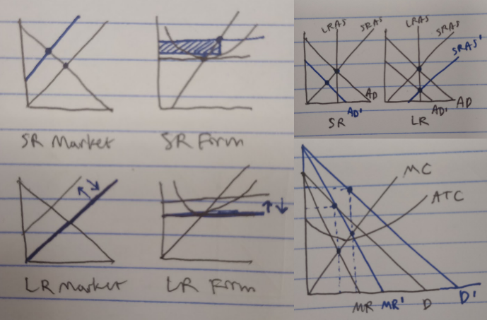

Overview
I love being an Econ 110 TA. It is still my favorite course I have taken at BYU, both for how the professor organizes the class and for the content itself. The job is very social, which I enjoy. I look forward to my office hours and to lectures. I view them almost as an excuse to take a mental break from my other obligations (e.g., other classes).
Duties
- Student interaction
- During class
- Outside of class
- TA lab
- Exam reviews
- Administrative work
- Weekly meetings with the professor and other TAs
- Creating review slides
Examples of problems we do in Econ 110
Adam Kelley, a former Econ 110 TA created several video walkthroughs for the class. Here he explains one of my favorite types of problems (perfect competition shocks). This type of problem is one that students most often tend to struggle with, so me liking them is useful since it means that I can explain them to students. On the other hand, I tend to get bored with the problems that students generally find easier.
Here are some more examples of graphs that we work with in the class:

Beyond Econ 110
I plan to minor in Economics due to my positive experience taking and TAing for Econ 110. A large part of economics involves data analysis. Data analysis can be applied for a variety of topics. For example, here's some data from a Tableau user about his Peloton activity in 2024. I plan to take BYU's econometrics courses after the Accounting Junior Core (which I plan to take Fall 2025-Winter 2026).